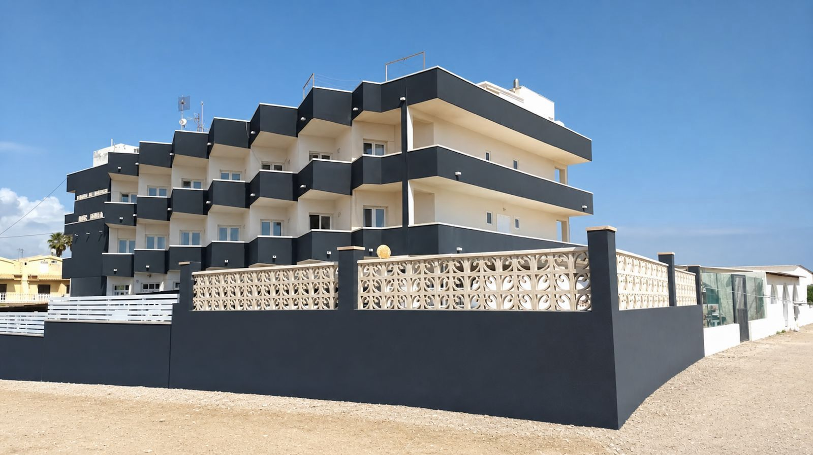

Det er tidlig morgen i Torrevieja. Solen stiger over Middelhavet og kaster et varmt lys inn gjennom vinduene på Centro de Mayores Mar Bella. Her, i første sjølinje, våkner 45 beboere til en ny dag — med havet som nærmeste nabo og et dedikert team på 22 ansatte klare til å ta vare på dem.

Soloppgang sett fra Mar Bella. Residensen ligger i første sjølinje i Torrevieja.
Mar Bella ble grunnlagt i 1994 av familien Motos-Valverde, og har i over tre tiår vært et trygt hjem for eldre i Torrevieja. I dag, etter en fullstendig renovering, fremstår residensen som den eneste luksuriøse eldreresidensen ved sjøfronten i hele Torrevieja-området.
«Vi er ikke bare en residens — vi er et hjem», sier direktør Jesús Valverde Motos. «Mange av våre beboere er internasjonale, inkludert nordmenn. De har valgt Spania som sitt hjem, og vi gir dem muligheten til å bli her — med den omsorgen de fortjener.»
«Mange norske pensjonister i Spania står overfor et vanskelig valg: flytte tilbake til Norge for omsorg, eller finne en verdig løsning her. Vi er den løsningen.»
— Jesús Valverde Motos, direktørUtfordringen er reell. Utenlandske statsborgere har som regel begrenset eller ingen tilgang til offentlige spanske sykehjem. For nordmenn som har bodd i Spania i årevis — kanskje årtier — kan tanken på å flytte tilbake til Norge være overveldende. Klimaet, vennene, livet de har bygget opp — alt ligger her.
Mar Bella tilbyr full medisinsk oppfølging 24 timer i døgnet, fysioterapi, kognitiv stimulering, eget kjøkken med middelhavsmat tilpasset individuelle behov, og et rikt sosialt aktivitetsprogram. Med 40 prosent internasjonale beboere er personalet vant til å jobbe på tvers av kulturer.

Mar Bella — nylig totalrenovert og beliggende i første sjølinje i Torrevieja.
Beliggenheten er vanskelig å slå. Med 320 soldager i året, Middelhavet rett utenfor døren, og bare 25 minutters kjøring fra Alicante flyplass, er det enkelt for familier i Norge å komme på besøk. Direktefly fra Oslo og Bergen tar bare to og en halv time.
Fakta om Mar Bella
- Navn: Centro de Mayores Mar Bella
- Grunnlagt: 1994 (30+ år)
- Kapasitet: 45 plasser
- Ansatte: 22
- Beliggenhet: Første sjølinje, Torrevieja
- Priser: Fra 3 200 € per måned (alt inkludert)
- Kontakt: +34 965 710 828 / residencia@residenciamarbella.com
- Adresse: Avda. Alfredo Nobel, 8, 03183 Torrevieja
For norske familier som søker omsorg for sine kjære på Costa Blanca, representerer Mar Bella noe sjeldent: en kombinasjon av profesjonell eldreomsorg, en uslåelig beliggenhet, og genuin varme. Direktør Valverde inviterer alle interesserte til en uforpliktende omvisning.
«Kom og se selv», sier han. «Det er den beste måten å forstå hva vi tilbyr.»